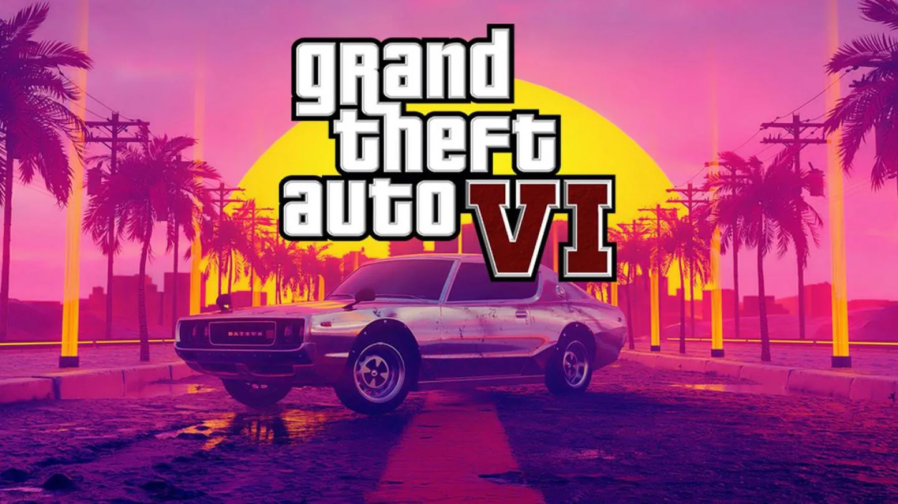
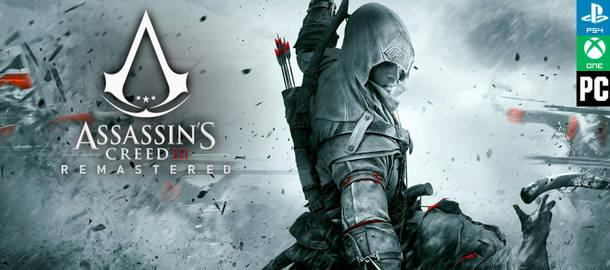
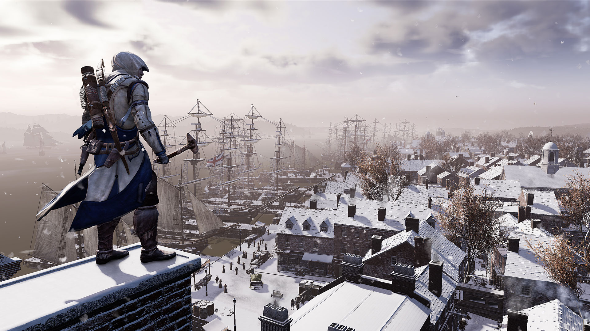

THEBRAILIN
Todo lo que sabemos de GTA VI, el próximo regreso a Vice City por parte de Rockstar Games en PC, PS5 y Xbox Series

GTA 6 bien podría ser el juego más esperado de todos los tiempos (incluso más que Elden Ring o Starfield), y
es
que Rockstar ni siquiera lo ha anunciado. ¿Ganas de saber más? Esto es todo lo que debes saber de Grand
Theft
Auto VI, el santo grial de Rockstar.
Todo jugador que se precie está esperando como agua de mayo a GTA VI. El enorme éxito de GTA 5 y su variante
multijugador (GTA Online) ha levantado aún más la popularidad de la saga de Rockstar.Hace unos pocos meses
pudimos disfrutar de GTA The Trilogy Definitive Edition, un
recopilatorio remasterizado que incluía GTA III, GTA Vice City y GTA San Andreas... y que no salió como
esperábamos.Por tanto, eso
significa que actualmente GTA Online y las versiones next-gen de GTA V (que saldrán este año) son los
principales bastiones para la saga, con la sexta entrega en el horizonte.
Debéis saber que el desarrollo de GTA VI está siendo algo accidentado, y todo apunta a que no se anunciará
de
forma oficial este año. De esto también hablaremos en el presente reportaje.Pero una cosa está clara: GTA 6
existe y lleva años en desarrollo, presumiblemente para PS5, Xbox Series X|S y PC. No hay duda de que
Rockstar
volverá a hacer historia con este título... ya veremos si para bien o para mal.

Rockstar Games no se va a quedar solamente con GTA V para vivir de rentas sabiendo el potencial que tiene el sandbox más mediático de la historia de los videojuegos y por fin es oficial que trabajan en GTA VI (nombre provisional): "el desarrollo para el próximo videojuego en la serie Grand Theft Auto está en marcha"
Este estudio suele tomárselo con mucha calma entre cada entrega de su saga principal, con periodos de entre cuatro y cinco años, como sucedió con los últimos GTA IV en 2008 y el citado GTA V en 2013, por lo que no deberían faltar muchos años hasta su lanzamiento. Y eso que muchas cosas van a cambiar en el futuro.
Noticias sobre El lanzamiento del nuevo juego de Assassin's creed III remastered

Se trata de laremasterizacion de la tercera entrega de la saga (Assassin's Creed III
Remastered). Se sentra en la guerra de la independencia de los Estados Unidos Encarnando a Connor,
lucharemos contra los Templarios y las tropas de los ingleses mientras descubrimos nuestro pasado.
Apostando por la aventura y la acción de sigilo en 3D con algunos cambios jugables, esta entrega cuenta con
un
nuevo motor gráfico, un motor de iluminación distinto y todos los contenidos descargables lanzados hasta la
fecha.

Assassin's Creed III Remastered se lanza el 29 de marzo en PC, Xbox One,
PlayStation
4 -y el 21 de mayo en Switch-. Como es habitual, la remasterización incluye diversas mejoras
gráficas
pero también algunas jugablesque Ubisoft ha detallado.
"La remasterización incluirá mejoras que se verán reflejadas en unamayor resolución en las texturas,
además de compatibilidad con dispositivos 4K y HDR.Hemos querido aprovechar la tecnología más
reciente para poner la calidad de este juego clásico a la altura de los juegos de Assassin's Creed
actuales",
dice la compañía. Se han mejorado modelos, iluminación y materiales.
Lanzamientos de juegos en agosto 2022
- Cult of the Lamb (PS4, PS5, Xbox One, Xbox Series X|S, Nintendo Switch, PC) - 11 de agosto
- Marvel's Spider-Man Remasterizado (PC) - 12 de agosto
- Shin-chan: Me and the Professor on Summer Vacation (PS4, Switch) - agosto de 2022
- Hard West II (PC) - 4 de agosto
- Rollerdrome (PS4, PS5, PC) - 16 de agosto
Lanzamientos de juegos en septiembre 2022
- Moonray (PC) - 1 de septiembre
- MJoJo's Bizarre Adventure All Star Battle R (PC) - 1 de septiembre
- MJoJo's Bizarre Adventure All Star Battle R (PS4, PS5, Xbox One, Xbox Series X|S, Nintendo Switch) - 1 de septiembre
- The Last of Us: Parte 1 (PS5) - 2 de septiembre
- Biomutant (PS5, Xbox Series X|S) - 6 de septiembre
Top 6 mejores juegos de los años 90

Crash Bandicoot

Half-Life

The Legend of Zelda: Ocarina of Time

Resident Evil

Super Mario 64

Final Fantasy VII

Doom (1993)